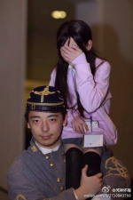

|
|
注意备份
请及时保存梅翰林的相关资料，包括但不限于文章、音视频素材、语录、美图等等，以免被梅翰林自我削除或被不可抗力与其他未知因素削除。 |

|
谨慎行动
由于该页面涉及人士具有 召唤卫兵 能力，请注意在互动过程中谨慎行动，以免承担不必要的笋丝。 |
梅翰林 / 霍华德·梅 / Howard Mei （1993.10.6 -），广东深圳人，现就读于美国卓克索大学 [1] ，少女前线同人社团“格里芬军事通讯局”主催，迫真硬核军豚，黄纳黄右，沙发共产主义者，炼铜术士，拖欠稿费废物。
| 梅翰林 | |
|---|---|
|
 甲午战争期间抢民女的日本兵 |
|
|
姓名 |
梅翰林
|
|
常用ID |
冥蝶军工
|
|
职业 |
同人社团主催 |
|
能力 |
迫真编辑
|
|
特长 |
迫真文字工作 |
|
必杀技 |
炼铜
|
|
硬度 |
∞ |
|
所属 |
|
梅翰林是已经在军圈与少前/舰c/战舰少女等军事游戏圈子里臭名远扬的人物，请各位一般通过人士注意。
目录
个人信息
- 地址：宾夕法尼亚州费城市北普林斯顿街245号（邮编：19104） [2] 。考虑到双拼住宅的可能性以及有几率错误拜访到30岁中年妇女加之当地的高犯罪率，不建议任何美国境内高雅人士与其线下互动。
- 高中：罗湖外国语学校（曾任职于学生会外联部、自律委员会）
- 生日：1993-10-06
- 神必号码尾号：0519 [ 来源请求 ]
- CN（？）：发菜
- 手机号：13006665351
贴吧ID：冥_血蝴蝶
|
谨慎行动
建议埋伏一段时间再记录言论并注意隐私，过早行动会被二五仔曝光以及契卡管理 权限 。因为目前为止存在的群可能不允许新的人加入，在群里活下来的高雅人士请务必注意安全。 |
- QQ：419357628
- QQ小号：1095224483
- QQ群 格里芬通讯社：601065136
其黑料众多，目前急需各路少前指挥官以及其他军圈人士补全归档，以供娱乐。
事迹
萌二编辑
最初的死妈废物跟少前圈有关系是从萌娘百科少女前线编辑组开始。萌百主页： 冥界蝴蝶 冥_血蝴蝶 ，不建议在评论区与其互动。
此外，关于梅担任萌百账号运营导致其“精分”的事迹，具体参见 张宇鹏#微博运营
然而您梅女士毫无能力还气走前任编辑外加不干事，以及恶意竞争和拉帮结派的恶臭历史，全萌百编辑组的人可是一个不忘！你在萌百卖你妈一百个批的萌！
独裁政权
后来梅女士创建了他自己的独裁国度“格里芬军事通讯局”，最初名义是作为所谓“少前萌百名下组织”活动，目前来看，这种行为极其可能是梅女士的为日后的盈利所做的挂名行为。
在询问多方求证之后，我们得以知晓：微博账号“格里芬军事通讯局”，并没有第二个使用者。微博账号“格里芬军事通讯局”与“冥蝶军工”，至少在使用者上而言，是可以划等号的。
另外，写手进去了只有被压榨的份，死妈蝴蝶女士的那点可怜的文学功底居然把写手们的原作改得连他妈狗屁废物不如像羊拉屎，建议立刻编进普通话特别高等教材。
作为一个只转发同时配上KY文字，顺便产出部分低于优秀水准创作的同人社团粉丝量居然有足足两万之多甚至大于同人同好会，可见通讯局或许还是一个同人垄断组织亦或是迫真花钱买粉。
而后来梅女士成功成为官方嘉宾出面官方直播与名字列入少前18年冬活结尾滚动条感谢名单这两点来看，梅女士已经膨胀为实至名归的少前中级大佬。
迫害异端
既然通讯局已经做大，吸引了众多同人创作者。那么那些同人创作者是否有得到应得的待遇呢？
实际上，在一个力求“硬核”的游戏的圈子里，梅女士无论是口头上，还是行动上，都是反对硬核的。
已经从多方证明，一个普通写手在通讯局群分享创作便会有遭到恶意辱骂的风险，而圈内大手子创作者在互动与投稿时却一致遭到通讯局一贯的冷处理。更有同人创作者遭到人身攻击以至于身心遭受不良影响，浪费了数月甚至整年的创作精力，制造了大量的通讯局PTSD患者。
除此之外，对于梅女士的种种暴行，不仅毫无悔改，竟将其群内头衔改为“契卡”并以滥用主催身份在通讯局的权力与影响力。
少女前线同人界史上最大最恶事件
涉纳同人
格里芬军事通讯局于2018年7月10日晚发布（并非转发）一则由韩国画师绘制的以奥斯维辛集中营为题材的 少前同人漫画 。
而此漫画作品所涉及的消费，歪曲美化历史以及涉纳，色情内容则因为在公众平台发表缘故遭受非议，并招致多方谴责声讨。
所以说，舔着韩国人的屎说真香的，这就是你梅翰林的历史态度？
迫真道歉
在涉纳漫画时间的大概个小时之后，梅女士终于睡醒发布了所谓“硬汉声明”
原文如下：
格里芬军事通讯局 07-11 21:23 于微博（改为仅自己可见） 既然这部漫画已经终于被爆破,我也可以说一下我个人的想法了。 这部作品是什么，是关于什么的。由是由什么作品作为灵感的,在这个漫画内已经描述的淋漓尽致了。 他是否为某些主义开脱，是否是鼓吹那些人类历史.上最可耻的思想的口号，也是不言而喻的。 那么下一个问题就简单了，我们能否描写这些东西呢。 一个作品是否应该探讨在那个历史的沉重砝码之下的故事呢。 这个问题继续的话,就是我们这部作品是否足以承载历史呢? 若暂时将好与坏这个另一个维度的事情弃之不谈。 只是连将其摆出来都不敢的话,我们所作的不过就真的是文艺审查了。 又或者这和这部同人没有关系，只是对这部作品，或者是我的反攻倒算呢。 那样明显还是更好一些。 这部同人是优秀的,是勇敢的是值得夸赞的。 其中的病态,错误和情感的爆发都基于那个时代里，人性暴露出最恶毒和毫无下限的部分。 作者对那个时代的认识，对于那个主义的认识。 我作为一个创作者都顶礼膜拜。 远远高于那些站在道德高地毫不思考下只是为了批判而批判的人。 如果这样的作品，大家连看都不敢。 那么我们才是有问题的人。 (当然漏点的部分就当我没说。 然后是说说我自己，介于一些朋友们在支持我，也有一些朋友在反对我。 我自己也应该表态一下。 通讯局和我是个什么立场的人 我的朋友们应该知道， 无论是对于政治还是关于创作。 我感谢那些支持的我的人， 我也感谢那些担忧我而反对我的人。 创作者是自由的，我阻止不了他们 但是我可以让这些东西在我这里让更多人看见，而不是被其他的一些人发出来之后而失去控制。 因此我对那些支持我，相信我的朋友们说声抱歉。 因为有些事情我必须去做也会继续做下去 我也将继续竭诚为各位服务。
总的来说，这篇道歉全程毫无诚意不说，总之全程的意思由某位用户所言即是：
“求求你别说了，尽他妈一堆虚话，不就一句‘老子看得起这作品，你们不配批判我’吗？文字游戏玩得真顺，牛批”
所以说，一个把自己跟郭沫若自比的炼铜癖把纳粹色情漫画吹捧成高雅文学的，你说你妈呢？
控评鬼才
迫真道歉发表后直至爆破之前，有细心人士发觉梅女士删除了部分负面以及言语偏激言论，可见石更梅大左的无能恐怖统治。
而其后通讯局于微博发表了简短声明，全文如下：
鄙人死蝴蝶 代表格里芬军事通讯局，对昨日不当之发言和同人作品转载中缺乏对不恰当内容的审查，向因为这个作品的不当表达而受伤的朋友们致以诚挚歉意。 感谢各位朋友的支持 和诸位对鄙人任意妄为之行为的意见和批评。 非常抱歉。 鞠躬。
实际上，梅女士在发布此篇道歉声明车欠的同时在其群内硬汉黑屁，表示“道歉只是装个样子”，具体见下方高雅语录
而发表的所谓迫真道歉以及涉纳漫画，经证实并非删除而是调整为仅自己可见。而所有转发那两条微博的人可是看得清清楚楚。
黑料爆出
在涉纳漫画转发事件后，有关人士因梅女士持续石更导致不满，发掘了大量的黑料。
留美黄纳
在涉纳同人事件发生之前，关于通讯局以及梅女士的行为便已遭知情人士不齿，殊不知其每天在其群内产生的大量弱智言论已经被高雅人士收集为通讯局政治笑话以供一览。
而所谓通讯局的群，据曾潜伏在此群的高雅人士透露，除了部分无辜同人创作者以外，混杂了大量死妈废物，包括但不限于：
美分/日杂/黄纳/废物小鬼以及键政明星
在恶俗爆破前已经被光荣出道的恶俗明星，由于事发时期本站惨遭 爆破 且已回归虚无，现已不再重复出道。
曾经为梅女士死妈舔狗的L姓二流女同人画手/写手，有着丰富的滥交史并于18年五月对梅千里送炮可惜一瞬失败，跟随梅四处黑屁迫害甚至导致某位同人画手于17年10月－18年3月期间罹患重度抑郁。
军圈/舰圈声名狼藉的节奏大师/举报人/迫真军事科普者
可见你死蝴蝶着实臭狗屎招苍蝇之本质，通讯局也已经是名副其实比野兽先辈恶臭114514倍的粪坑。
而在其黑料持续曝出的情况下，梅女士并没有选择接纳负面舆论与诚恳道歉。而是将群内部分言论偏激者与反对者当作“敌人”进行权限或者出群留学，并建立所谓“防空洞”以备不时之需，可见你群通讯局法西斯本质。
欠费欺诈
众所周知，通讯局一直存在一个令人诟病问题：转发从不署名、不带链接，发布作品也从不落款
而上述现象，蝴蝶本人迫真辩解为“保证文笔，风格统一”，而蝴蝶那充满了低级黄色废料的审美趣味也导致了通讯局的文章与接受投稿的低质量，和当时只有迫真恋爱题材充斥少前同人圈子的不良环境。 而经由通讯局前成员爆料，通讯局名下数篇文章，包括且不限于：
《罪犯》 《斯普林菲尔德的小屋》 《冷雨》 《留守者》 《满陇桂雨》 《春天与梦》
以上文章，均非蝴蝶所写，而你蝶在用其稀稀拉拉像狗他妈拉大便的废物文笔随便改改几个字后，利用不署名不落款的漏洞则冒用其作者身份，可见其诈骗本质。
更为过分的事，其中有篇文章的原稿与成品居然只是将整章角色完全替换，可见你蝶不尊重写手却自称为文学工作者的恶劣态度。
除此之外，以上文章以及通讯局所有配图作者，乃至与通讯局有过合作的云母组官方画师，梅女士均没有给出一美分稿费，格里芬奴隶局本质实锤。
劣质外包
据悉，格里芬通讯局曾外包过少女前线咖啡厅2016年万圣节皮肤的文案。而这次文案也遭到后来众多玩家抱怨其质量不佳，而从后来的黑料爆出来看，死蝴蝶是吞了大量稿费盈利的。
可喜可贺，这些劣质文案最终由官方重置，质量一跃至羽中他母亲在天上的高度，是鉴。
疯狂骗炮
有关于这一条，事件爆发后，在知乎匿名用户贴图称某位画手为造谣约炮的垃圾画手时，该画手曾爆料梅女士曾同时与多名女性有染，而此画师曾坦言曾被梅女士诱骗美国未遂。而梅女士下手的目标往往都是年纪不大的女性画师，然而而其毫无变化可言的调情套路甚至还不如十万甚至九万个 魏逸霖 。鉴于其篇幅过长，具体可参见注释文章。
而梅女士对于骗炮一事的回应，却令人感到过于奇妙深刻：
约炮本身就是极其廉价的消费主义，然后我再告诉你价格的问题。我很负责的告诉你，男人比女人贵，因为更多的男人尝试买卖女人，而不是反过来。
而在更早的时候，有高雅人士挖到了梅女士曾经留下的一句更令人感到奇妙的神言：
所以，梅是否有给别的男人扣过绿帽子，我们不得而知。
炼铜术士
有相关爆料称，梅大佐于回国期间与某未成年同人画师有染，鉴于其行为过于龌龊以及被害人身份保护政策，详情请阅注释文章。
然而你蝶炼铜行为做实，通讯局的党卫军/契卡们却一瞬大量黑屁甚至扬言攻击被害者，建议立刻去世。
勾搭画师
2018年5月17号，知名画师老累收到了礼物。涉纳同人事件后，经证实，礼物其实由梅女士发出，可见其多情能力跟
魏逸霖
有一拼。
正式出道
事件愈演愈烈，北京时间2018年7月13日下午3:59，梅女士成功出道。
冒充员工
在18年7月北美某漫展上，梅女士在展会期间冒充云母组官方人员而且以官方名义回应媒体采访，后被官方人员否认。
官方澄清
官方澄清（二度）
在事件持续发酵以及更多的言论被扒出之后，少前官方云母组一贯以弱智著称的公关大脑升级，于18年7月13日7:24分发布了一篇与梅女士以及通讯局彻底撇清关系的 声明 。至此梅女士在云母组官方的风评一瞬坠毁，万劫不复。
全文如下：
亲爱的指挥官们， 近日，一篇内容不当的同人作品被转载于微博。我们在此声明转载该作品的微博账号“格里芬军事通讯局”为非官方组织，也绝不代表官方态度。 《少女前线》是一款宣扬积极向上内容的科幻游戏，与实际历史和人物没有任何关联。创作同人作品时，希望大家可以表现出符合道德观念和美好精神的作品。 关于“格里芬军事通讯局”的运作者冥蝶军工，他并非是云母组的入职员工，和散爆科技网络有限公司也没有任何关联。 在17年9月到10月期间，因为开发进度紧张，我们联络了冥蝶军工进行外包文案工作，为16年万圣节主题的装扮撰写咖啡厅剧情，该剧情在17年10月25日加入游戏。之后因为反响问题，没有继续进行外包合作。并且，我们将在之后重新撰写16年万圣节主题的咖啡厅剧情。 冥蝶军工在“活动结束后的感谢名单”中出现，也是因为上述的外包文案，除此以外他没有参与任何少女前线的工作。 16年7月到18年6月期间，为了填充公众号发布内容，也为了鼓励同人创作文化，数字天空方面的运营人员与冥蝶军工进行了一些有偿同人作品约稿。随着数字天空负责此项约稿人员的离职，该项同人约稿合作已经终止。 最后再次重申，我方新浪微博唯一官方账号为“少女前线”，一切官方消息以本官博为准。 感谢大家一直以来的支持！ 《少女前线》运营团队
树倒猴散
在英文服和云母组官方相继发布声明后，余下的跟通讯局有关系的团体也陆续发表声明跟通讯局决裂，包括但不限于：
原隶属于通讯局负责同人本与参展的同人作者组成的团体，已分离通讯局并重组。
因为通讯局事件而遭受牵连的一般通过萌百少前组，在梅女士离开少前编辑组后发布声明。
与通讯局简称撞名的少前同人公众号
明日方舟某同人社团。
不得不说梅女士的行为有多么恶臭不堪，得罪了十万甚至九万个少前同人创作者甚至更多，请继续保持。
死者苏生
格里芬军事通讯局的微博在事件后的最后一次更新停止于18年7月12号。
然而梅女士的脸皮堪比军方绿无敌的装甲那么厚，通讯局微博在一个月后于18年8月13号一瞬复活。
复活后内容只剩下因为林檎石更转发的未对通讯局恶性有了解的一般通过coser的内容，然而在多方谴责下，通讯局仅复活了两天便再次坠毁，只留下持续的零星点赞。
而那些被转发coser的微博下也均有正义人士提醒揭发通讯局暴行，实属指挥官之鉴。
再度复活
梅女士于2018年12月举办的ComicUP23再度现身。只可惜由于事件热度已过，无人对其进行线下互动。社团爆破，最幸福主催。
另外建议留美废物梅大佐归国时期遵守规则，请不要使用美元支付以免对摊位人员造成不便。
黑屁金庸
- 哎呀，金庸的小说终于完结了
神社爆破
至于梅大佐的费拉不堪的酸臭恋爱文笔能不能写出少前的神触文案，我们暂且蒙在羽中的玉音朗诵里
白嫖代练
|
当前事件
截至2019年2月，每天都会成为昨天，记载的内容可能在三分钟内死亡。 |
据评论处某位热心网友的爆料，梅翰林在请代练代捞的时候欠款，那么我再此远程喊话，笔者见过你梅翰林在通讯局群里氪过不知多少648抽皮的纪录，建议以后遇到此类问题被拖欠的代练人士遇到梅的少前账号后拆枪解决问题qqqxx。
定于一尊
2019年4月10日，张宇鹏萌币事件炎上。就在维护人员积极讨论如何替张宇鹏擦屁股并对其发出警示时，早已不是管理员的梅翰林时隔多月唐突现身捍卫张宇鹏。维护组理论上只进不出，除非本人出群留学，否则不主动清理离职人员，因此梅翰林一直滞留在维护组内，甚至还保留着原来的“管理”前缀。面对一众质疑张宇鹏行为的维护人员，梅翰林参照纳粹党一个民族、一个帝国、一个元首的理论，认为所谓的“基本团结问题”就是维护人员必须支持张宇鹏，实现你是一个、一个、一个、一个站长！最后甚至发表了“一 我们该怎么做 二 我们能怎么做……所以这点我要去维护 那么我们能做什么……但是不去坚持团结就完了”等诸如此类的尊师式演讲，然而煽动力实在是泰国第几，难以望希独睾之项背。
党卫军
鉴于其还有众多死妈小鬼为其效命，故此建议各位注意保护个人隐私。 以下列出部分典型人物以及案例，除强调加速迫害以外人士均不建议互动。
跟死妈蝴蝶一个路子的黄纳，精神红脖，美国漂移移民，死妈青蛙头废物，在接触4Chan后一瞬大脑降级超大量无能狂怒，对象包括不限于： 犹太人/白左/蝴蝶骗炮炼铜受害者/少前同人画师/一般通过人士，直至2019年一月此人依旧持续硬汉黑屁。
语录
|
不适内容
本页面可能包含使您感到部分
不适
的内容，请酌情查阅。
三观奇歪
|
美利坚新纳粹
配合上文 涉纳色情漫画 一齐阅读风味更佳。
- 历史代表的善与恶都是真的 否认才是假的 歌舞升平都是假的 但是也要记住一点 铁与血的胜利 也是基于不能退让的坚韧。所以我歌颂红军的胜利，因为那是真实的，所以我描绘法西斯的邪恶，因为那也是真实的。
- 这部OOC吗OOC画的够好吗还不够宣传纳粹主义?还有创造极端缺德的梗，那是他们太低俗了。
- 您配吗？您不配。
- 我这个可不是争议，中二之心而已，可不算好事，别打脸啊。
- 因为国内的同人创作者，读者根本接受不了这类作品。从我们的角度，只能说 期望这类作品尽量少，anyway。
- 说我同情纳粹，well，毕竟他们不知道我是个什么政治立场。何况很多人是为了否认我是个创作者的立场，这点观众是看不见的，何况是黑我的人，这点我没办法。
- 那么就正确的向群众本身道歉，国内的政治情况和国外是完全不同的，国内的舆论是右翼当道，我们不过是游戏玩家，不过是亚文化中的亚文化群体，不要用美国的政治争议去理解我们国内的政治问题。
- 国内的政治问题最大的一点就是历史伤疤和历史记忆问题，是站在中国时代 对于中国人是什么 中国人在世界的地位是什么的纠葛，不同人的答案不同，这是中国的左派和右派，绝不要用去美国那些现实的。考虑社会雇工，考虑民族构成，去理解，中国哪怕跟香港一样，开启南亚打工人，中国的人口都足以吃下大量的外来人口，不影响就业，甚至是社会构成。我们的问题截然不同，我们是自身的，也是截图党会拿我话去做文章的，老有人说，如果这是南京，这是大屠杀，是731，会怎么样。
- 历史上这些谋杀就是发生了 如果少女前线这个游戏足以承载这些话题，那么就是少前这个游戏优秀到可以将历史放置其中，如同《南京南京》这种争议的电影。
- 不能跟4chan似的，那就没救了，虽然那里好人很多。
沙发共产主义
此条目收录蝴蝶在通讯局发出的一般“学术”言论。
- 赛博朋克的本质是右翼的
- 约炮本身就是极其廉价的消费主义，然后我再告诉你价格的问题。我很负责的告诉你，男人比女人贵，因为更多的男人尝试买卖女人，而不是反过来。
- 看吧，反革命真是多，我该如何是好？
- 既然有人说，反正会被发出去，我就重申一下通讯局的原则点。为了保证通讯局文章的整体性和完整性，格里芬通讯局文章发布，不署名，不记录。所有文稿给我的前提是可以接受文章编辑。为保证文字的质量和内容，这是通讯局贯彻的方针。其次，至于稿费，老子妈的自己稿费都没有！哪个画师的稿费没结的过来找我。
- 这是通讯局的原则，不接受可以不投，我也不抢你们的
- 去你的，核心的都是我写的好吧。
- 说说个人想法啊，其实这类的同人号必然是有好处的，但是核心竞争力其实还是来自于你能拿出什么。通讯局不是因为转发好，有人气的。是因为写的了一个统一风格的文章才能够做到的。我自己的那些规则也是为了保证这一点，当然如果是有官方支持，砸票子也是一个思路啦。
- 国内的右派还是别发声了
- 我始终是萌百的人，到时我不能是一个版面的人啊，理想还是带出一个队伍，交给他们一个成熟版面，要不萌百得多少管理员才带的动，通讯局同理（然而创作少前萌百标准版面的编辑是被您老气走的啊）
党卫军笑话集
收录涉纳漫画期间通讯社其他成员群内言论，欢迎补齐。
- 不能沿着网线去打韩国人而是只能挂你，体现出了玩家只是窝里斗的废柴
- alright，我回去写个肯特大学惨案来恶心回去他们
- 得了吧，过两三年再来一次，我们玩家不也是这样。过多两三年换个游戏再来一次，那玩家是不是要负责任，或者你们只是想把我们打成纳粹，但得好啊。
- 骂别人法西斯的自己就是法西斯@antifa，你看我头像是一个黑犹太人的梗图但我有被人@大使馆了吗
- 纳粹错的是思想，是做法，这和别人的美术水平有何关系？德国人坦克就是漂亮啊，古德里安就是帅啊，这一点都不纳粹。
- 是时候黑一波以色列和巴勒斯坦了
- 你看4chan就是这样的套路，比如这种，让你的对手产生内部分裂，而让其自我分裂。
- 蝴蝶怎么说呢，看到了作者的勇气，看到了作品的真实性就心动了。
- 其实我感觉蝴蝶算是我认识的人里面三观算正的几个了
结语
同人，作为一个创作与盈利双重风险与机遇的形式。作为萌二里少数良心的部分，涌现了极大的优质创作但同时也无可避免地混进部分盈利垃圾。梅翰林女士的光荣事迹与其格里芬军事通讯局的起势直到坠毁，作为少前同人史的一部分几乎涵盖与代表了现如今萌二圈子的所有消极部分。其所行之恶臭，林擒之硬汉程度，不可谓惊为天人，震撼我妈。除此之外，假设没有这些黑料的释出与曝光，恐怕一个游戏圈子风评的坠毁也必将由这些人所起，请以此为鉴。
您知道吗？
蝴蝶新说
梅翰林卡利古拉说
- 卡利古拉是罗马帝国的皇帝，而梅翰林是通讯局的独裁者
- 卡利古拉是历史上经常被提起的暴君典型，而梅翰林是少前同人圈经常被提起的负面典型
- 卡利古拉的私生活混乱，而梅翰林的私生活也很混乱（指骗炮）
- 卡利古拉被亲信刺杀，而梅翰林也被其兄弟一瞬背刺
梅翰林 吴织亚切大忽悠 说
- 众所周知，YQY是恋童癖。而梅翰林也是炼铜术士。
- YQY有奶子精，而梅翰林有死妈党卫军。
- YQY坐拥粉丝大量，而通讯局也有不少粉丝。